Mac の中だけで動く
音声認識も AI も Mac の中で動きます。話した内容は、クラウドへ送りません。
試作版v0.6.0macOS 26 以降 / Apple シリコン
voice-control（コマンド名は vc）は、声や文章で頼むと Mac を操作してくれる、メニューバーのアプリです。質問には会話で答え、会議や動画の音は、文字にして、まとめます。音声認識も AI も初期設定では Mac の中だけで動くので、話した内容は外に出ません。
実行してよいコマンドは、AI ではなく許可リストで決めます。
dmg をダウンロードして、「アプリケーション」へドラッグします
音声認識も AI も Mac の中で動きます。話した内容は、クラウドへ送りません。
スキルごとに、使ってよいコマンドを決めます。リストにないものは実行しません。
SKILL.md を 1 つ書くだけで、スキルを足せます。
Shift を押して話し、離すと実行します。いまの状況は、画面の上のパネルに出ます。
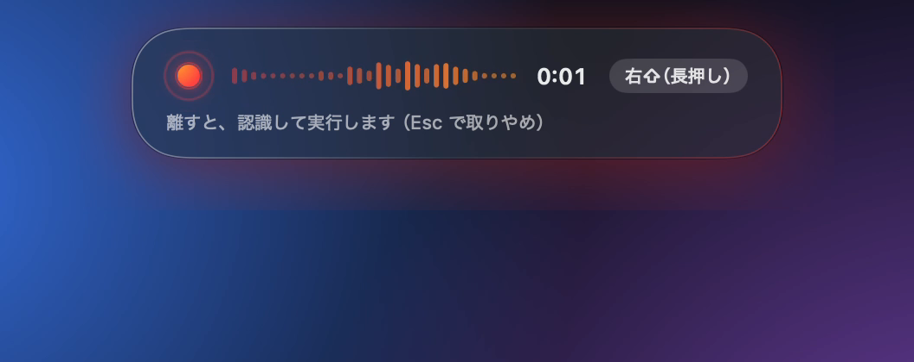
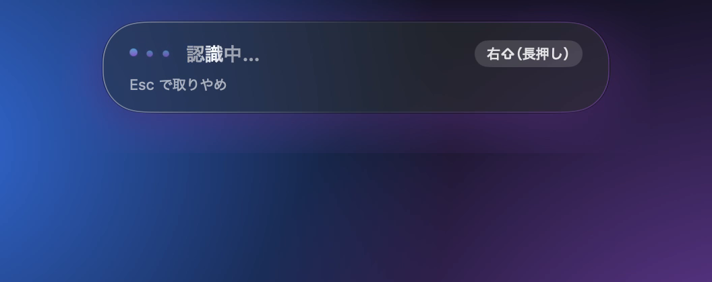
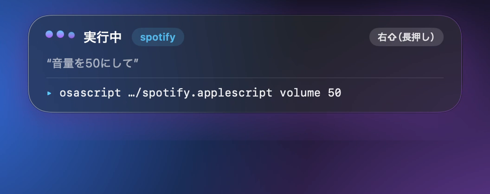
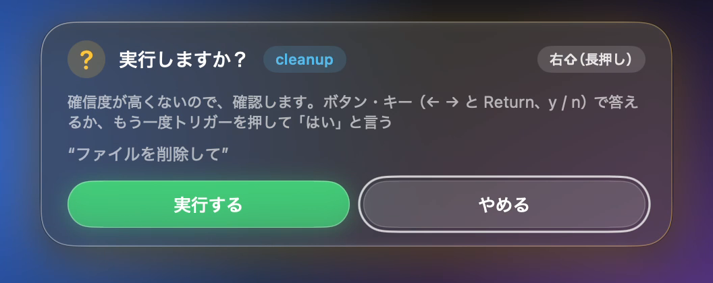
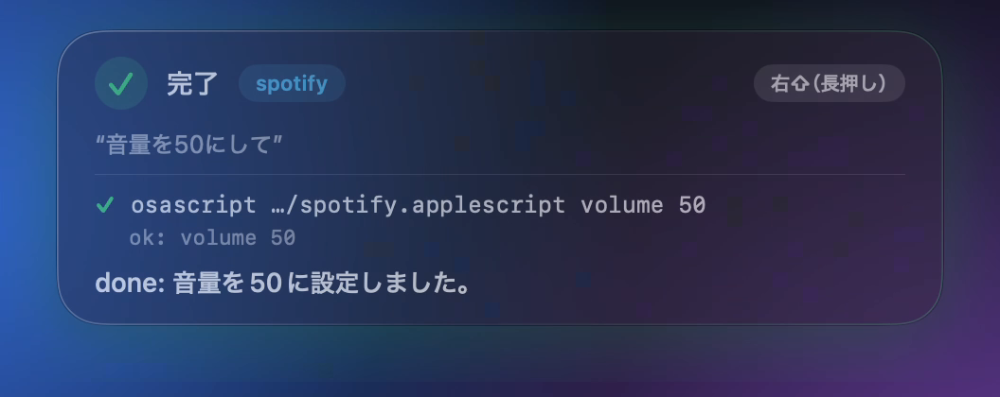
画面は vc hud-preview の見本です。
例を選んでください。実行はせず、実行しようとするコマンドだけを出す vc run --dry-run の、本物の出力です。
話しかける内容
スキルは自動で選ばれます。当てはまるものがなければ、「既定スキル」が受け持ちます。
スキルを選ばずに、質問を重ねられます。調べたときの操作は、答えの下に残ります。
会話のキーを押している間話すか、メニューバーの「会話を開く」で文字を入れます。Esc で読み上げを止められます。
なし（初期設定）・Web・＋読む（作業フォルダ）・すべて（書き込み・コマンド）。「すべて」は、書き込みやコマンドの前に確認します（外のエージェントで常駐の接続を切ると、確認なし）。
初期設定は Mac の中の Apple のモデル。claude・codex・grok・agy・opencode・pi のうち、入っているものを選べます。外のエージェントを選ぶと、発話がその提供元へ送られます。
範囲を選んで撮り、画像について聞けます。Apple のモデルは Mac の中で読みます。外のエージェントには、送るたびに確認します。
ウィンドウへドロップ・クリップで選ぶ・⌘V で貼り付け（外のエージェントのみ）。送るたびに確認します。鍵や .env などは断ります。
考えている間に送ると順番待ちに入り、前の答えのあとに送られます。「今すぐ送る」と「取り下げ」もあります。
会話のキーで「止めて」と話すと止まります（「音楽を止めて」は、普通の質問です）。上へ戻ると「最新へ」が出て、⇧Return で改行できます。
会話の記録はメモリだけです。「会話を終わって」・5 分間話さない・アプリの終了で消えます。
Mac から出ている音を文字にして、チャットの形で並べます。整理・保存・要約まで、Mac の中で。実験の機能です。
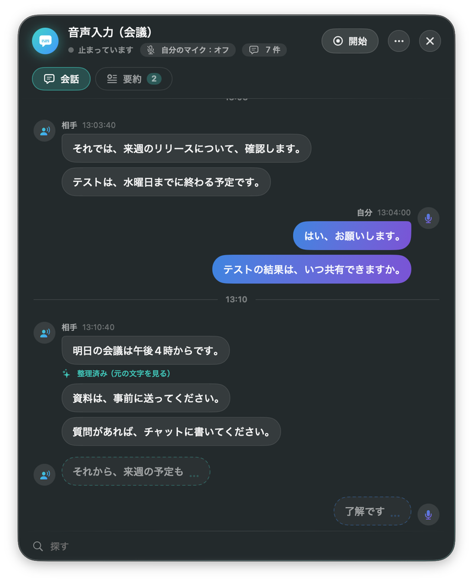
設定 > キー に決めたキーを、押すたびに切り替わります。画面収録の許可が要ります（音だけを取り込み、画面は使いません）。動いている間、メニューバーのアイコンが赤い丸になります。
Mac から出ている音が「相手」。マイクをオンにすると「自分」も並びます（初期設定はオフ・ヘッドホン推奨）。コピー・書き出し・履歴でも、区別します。探す・1 文のコピー・1 行の削除もできます。
言い直しやつなぎ言葉を、言語モデルで整えます（相手と自分で別のスイッチ。初期設定はオフ）。Markdown・テキスト・字幕（SRT・VTT）で書き出せ、保存先を選ぶと、止めたときに自動で書きます。
「要約」の面で、会議全体や、「決まったこと」「やること」などのテーマ（コメントも書けます）、選んだ発話だけを、まとめます。話にない数字が出た要約は、出しません。
音声は保存しません。文字は、履歴をオンにしたときと、保存先を選んだときだけ、自分だけが読めるファイルに残ります。整理・要約は、設定 > モデル の「スキルを実行するモデル」（初期設定は Mac の中の Apple のモデル。クラウドは使いません）。
ここの文は、スキル・会話・コマンドには回しません。相手の声を、命令として実行しません。
認識は、間が空いてから文を確定するので、表示が数秒遅れます。要約は、誰がやるかを取り違えることがあります。実マイク・長い実会議の確認は、まだです。
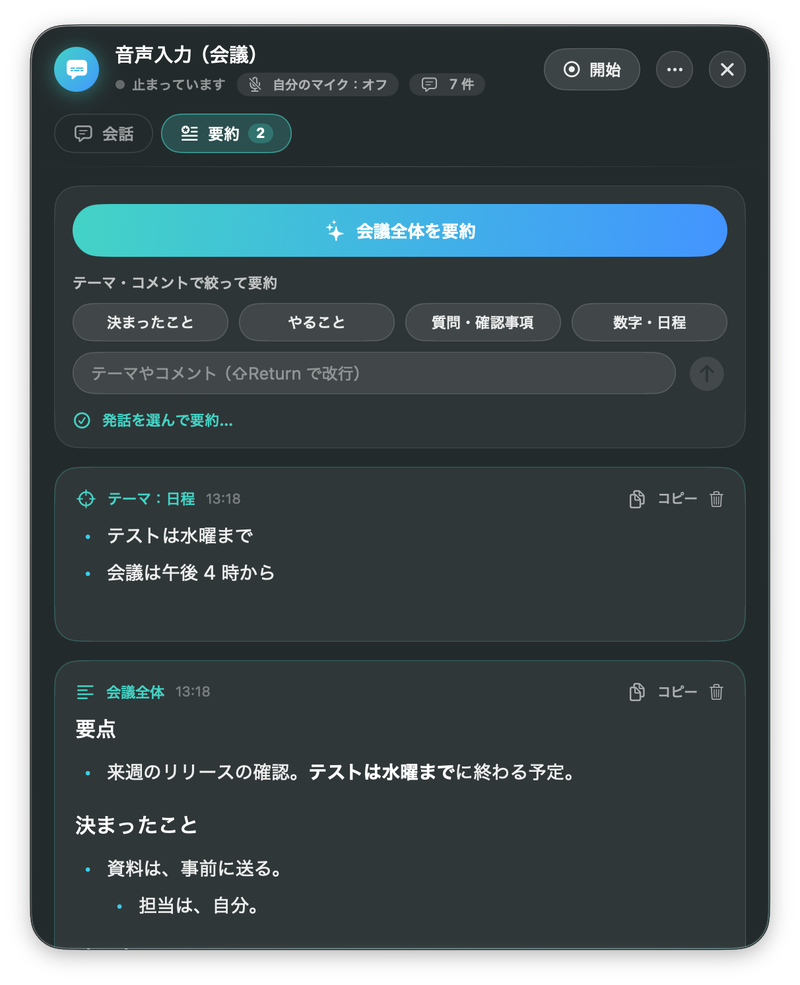
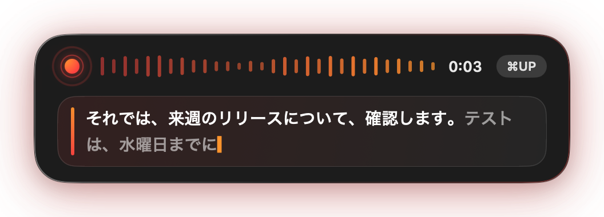
声で頼む・声で入力する・会議の音を文字にする・画面を撮って頼む、が使えます。
Shift を押している間話して、離すと実行します。Esc で取り消せます。実行中にもう一度話すと、前の処理を止めて、新しい依頼を実行します。
メニューバーのアプリ
調べた結果や要約を、読みやすいウィンドウに出します。⌘C でコピー、Esc で閉じます。
話した言葉を、いま使っているアプリに入力します。送るキー（Enter など）は複数登録でき、「えーと」の削除や、直前の入力の貼り直しもできます。履歴は、オンにしたときだけ残ります。
設定 > キー ／ 設定 > 音声入力
通話・会議・動画の音を文字にして、整理・書き出し・要約までできます。音は残さず、Mac の中で処理します（実験）。
設定 > 音声入力（会議）
「Claude で調べて、そのあと Spotify で次の曲」のように、続けて頼めます。1 つずつ実行し、失敗したらそこで止まります。
設定 > モデルで無効にできますSKILL.md に「何をするか」と「使ってよいコマンド」を書くだけです。
vc skills install --all
初期設定は Apple のモデル。Ollama や LM Studio など、自分の Mac 上のモデルにも替えられます。クラウドのモデルは指定できません。
設定 > モデル > エンジン
撮った画面について、声で頼めます。画像は Mac の中のモデルにだけ渡します。
ショートカットで画面が止まります。ドラッグで範囲、クリックでウィンドウ、Enter で全画面を選びます。撮れたら「この画像の文字を書き出して」「右半分を切り抜いて」のように頼みます。
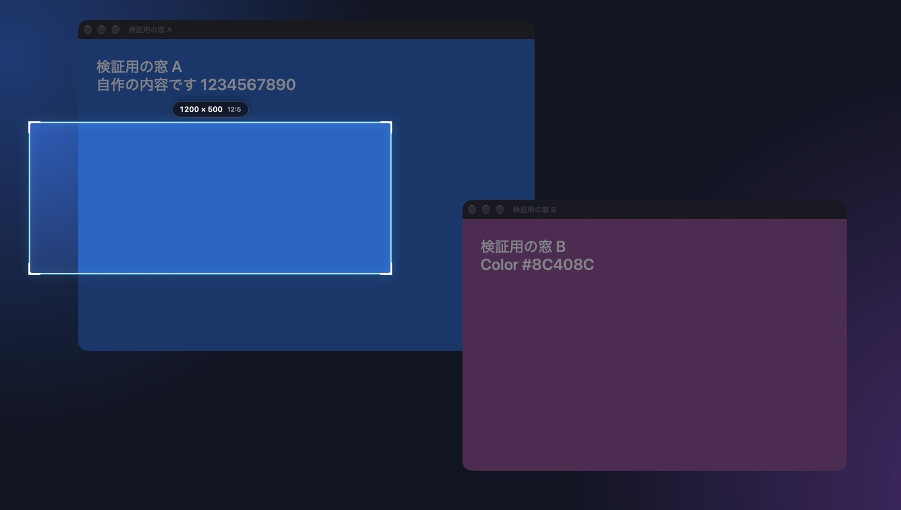
設定 > キー > 画面撮影撮ると、画像のパネルが開きます。画像やパスのコピー、Finder での表示ができ、ほかのアプリへドラッグもできます。「文字起こし」は、画像の文字を macOS の文字認識で、そのまま出します。
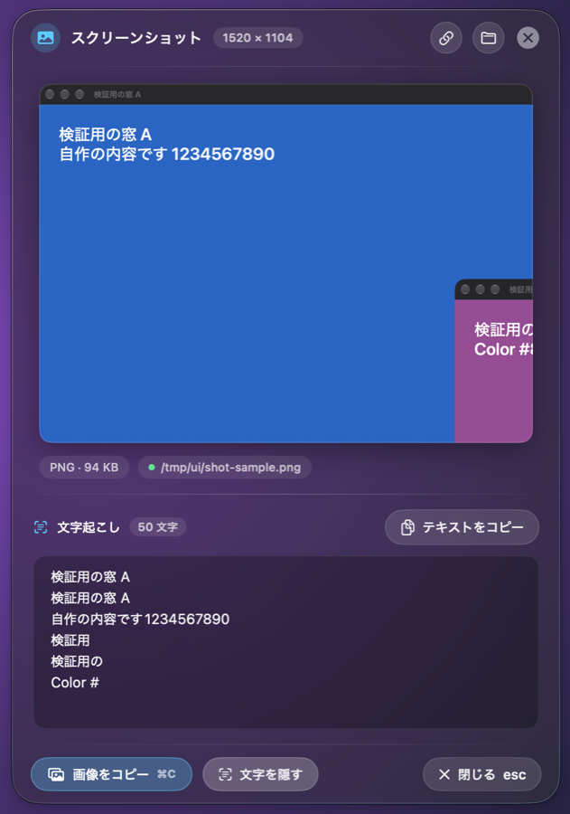
Shift を2 回タップすると、手を離しても録音が続き、黙ると認識を始めます。押し続ける使い方も、そのままです。
設定 > キーで、押している間だけに戻せますスキルに ${SCREENSHOT} と書くと、撮った画像のパスが入ります。ImageMagick などに、画像を渡せます。
magick "${SCREENSHOT}" -trim …リポジトリの .voice-control/skills/ にあります。
音量を50にして
お気に入りの曲をかけて再生・一時停止・次の曲・音量・お気に入り・今の曲の読み上げ。曲名やアーティスト名での再生はできません（検索ページを開くまで）。
コピーした文章を要約してコピーした文章を整えて、読みやすいウィンドウに出します。
先月の議事録を開いて名前・場所・種類・期間でファイルを探し、候補が複数なら選んで開きます。
Amazonでマウスを検索して指定したサイト（Google、Amazon、YouTube、楽天、Yahoo!、Wikipedia、地図、X）の検索ページを開きます。検索ワードは、そのサイトに送られます。
クロードでRustの所有権を調べてagy・claude・codex・grok・opencode・pi のどれかに調べてもらい、要点を表示します。指定しなければ agy です。
この画面をクロードに見せて、エラーの意味を聞いて撮った画面を、選んだエージェントに見せて、答えを表示します。画像は提供元に送られるので、毎回確認します。
この画像の文字を書き出して
コピーした画像を要約して撮った画面やコピーした画像の、文字の書き出し・説明・要約・翻訳を、ウィンドウに出します。画像は Mac の中のモデルにだけ渡します。
右半分を切り抜いて
JPEGに変換して撮った画面やコピーした画像を、切り抜き・サイズ変更・回転・形式変換・背景除去（実験）して保存します。
『あのさ』をつなぎ言葉に追加して声で入力するときに消す「つなぎ言葉」の辞書に、言葉を足します。
Safariを開いて上のどれにも当てはまらない依頼を、
agent-desktop と基本のコマンド（open・say・ls・pwd・date）で実行します。許可の範囲は狭くしてあります。メニューバーのアイコン > 「設定…」。変更はすぐ反映されます。
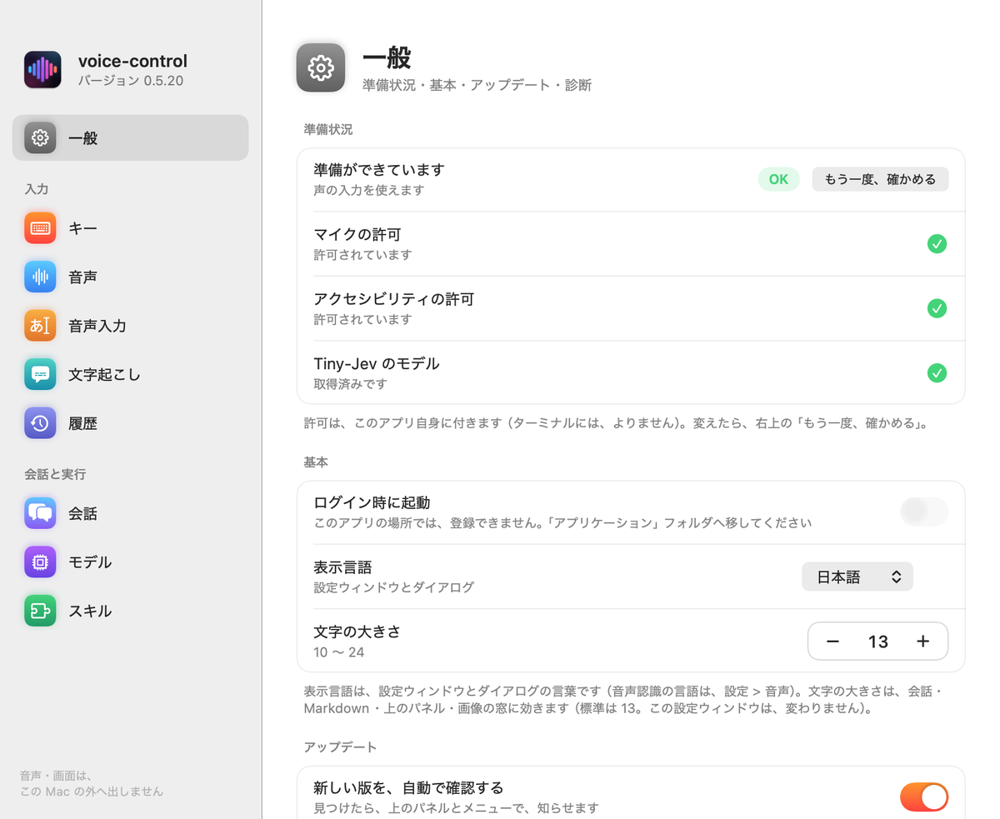
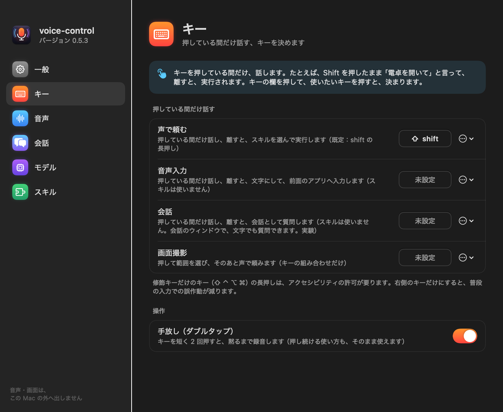
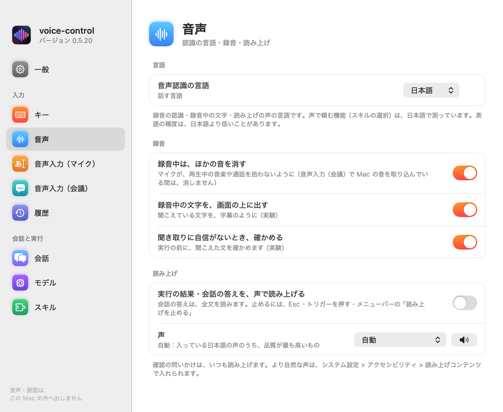
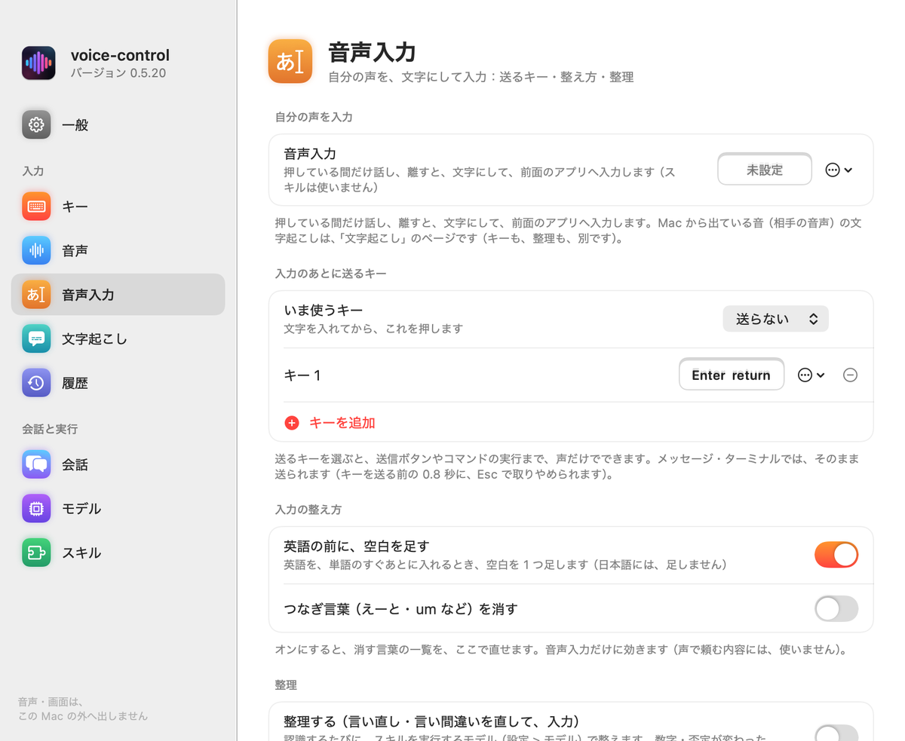
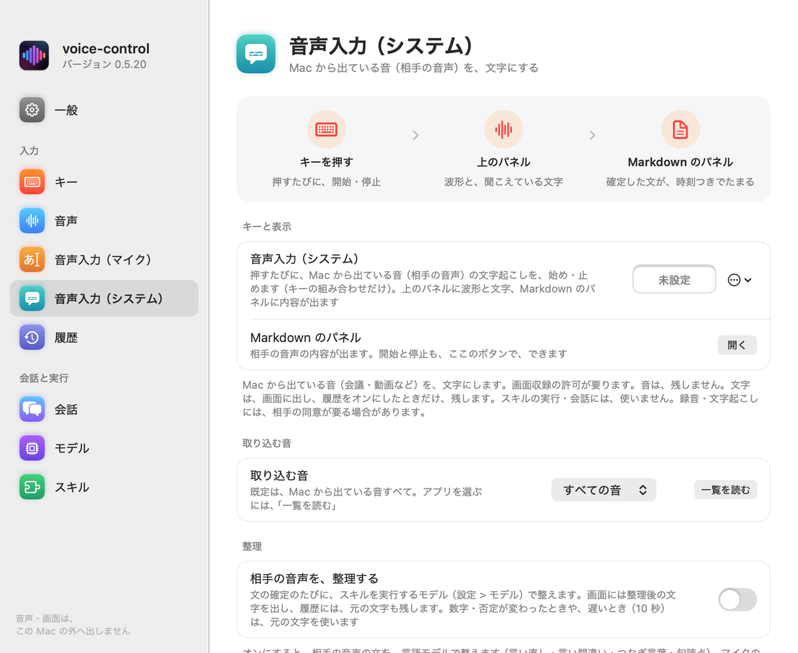
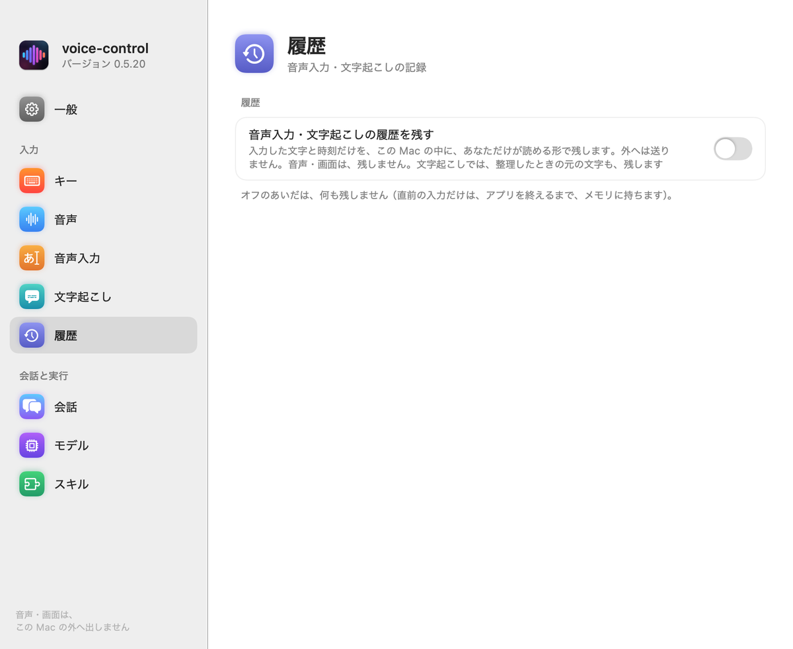
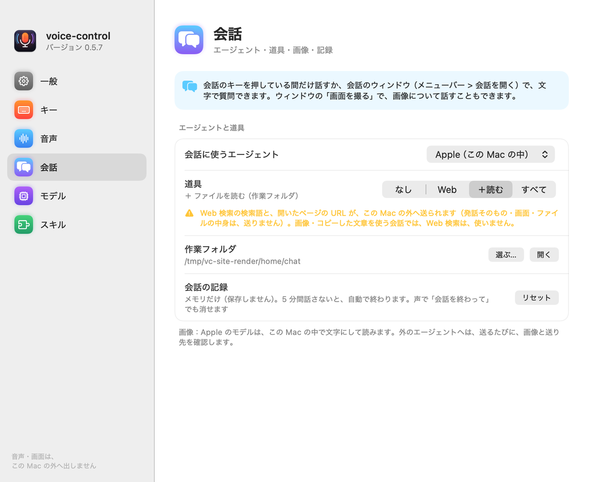
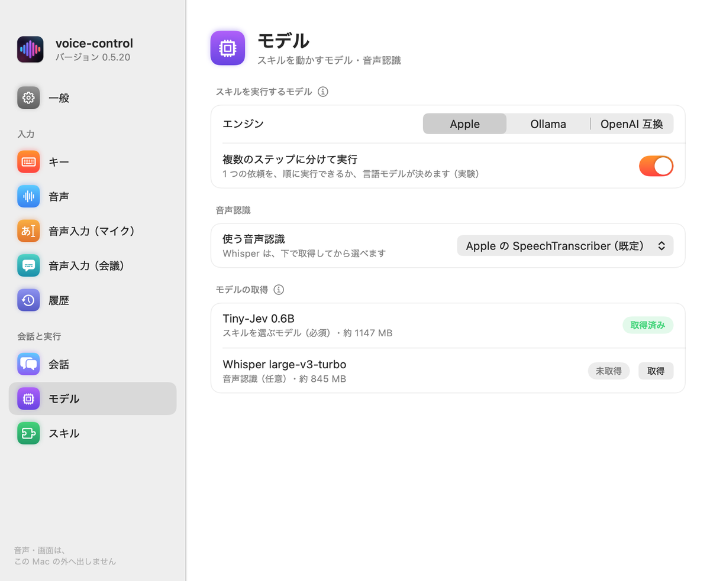
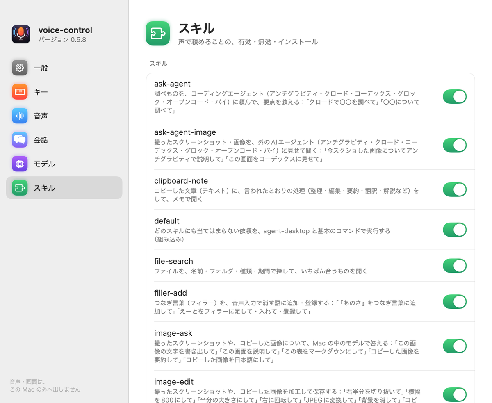
画面は、本物の設定ウィンドウを画面の外で描いたものです（中身は見本）。
AI は間違えることがあります。だから、何を実行してよいかは、AI ではなくプログラムが毎回チェックします。
スキルの allowed-commands と先頭が一致するコマンドだけ実行します。
パイプ・リダイレクト・&& は使えません。sudo やシェルの起動は、許可リストにも書けません。
削除・送信・購入など取り消しにくい操作や、自信がないときは、実行前に確認します。スキルに confirm: true と書くと、必ず確認します。
音声認識・スキルの選択・初期設定の AI は、Mac の中で動きます。例外は、自分で入れた 3 つのスキルと、自分で選んだ会話のエージェントだけです（「使う前に」を見てください）。声で入力した文字の履歴は、オンにしたときだけ、自分だけが読めるファイルに残します。
話した内容、画面の文字、AI の出力に命令が書かれていても、実行の指示としては扱いません。
Apple のモデルの道具は、作業フォルダの外や内部の URL へ行けず、シェルや通信のコマンドは使えません。小さなモデルが道具を呼ばずに作り話をしたら、答えにせず、失敗として知らせます。
取りやめ・時間切れ・接続を閉じるとき、エージェントが起こした子プロセスも止めます。関係のないプロセスは止めません。
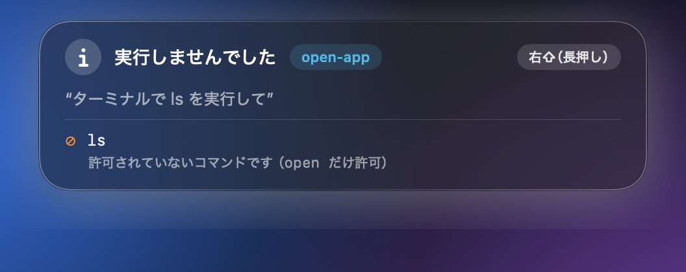
5 つの手順です。コマンドは、ターミナルに貼り付けて実行します。
次の 4 つを確認します。
アプリの画面を操作する道具です。
ターミナルで実行
npm install -g agent-desktopdmg を開いて、voice-control.app を「アプリケーション」へドラッグします。
macOS に止められたら（署名は ad-hoc です）、ターミナルで実行
xattr -dr com.apple.quarantine /Applications/VoiceControl.app結果：メニューバーにマイクのアイコンが出ます。「設定…」> モデル で、スキルを選ぶ小さなモデル（約 1.2 GB・SHA-256 を検証）を取得します。マイクとアクセシビリティの許可は、アプリ自身に付きます。
必要な許可がそろっているか調べます。メニューバーのアイコン > 「診断を見る」。
結果：足りないものと直し方が出ます。主に次の許可が必要です。
まず実行せずに試し、次に声で頼みます。
5-1 同梱のスキルを入れる（設定 > スキル でも入れられます）
vc skills install --all5-2 実行せずに、何をするかだけ見る
vc run "音量を50にして" --dry-runTiny-Jev spotify 90.2%（0.1 秒） $ osascript ~/.voice-control/skills/spotify/spotify.applescript volume 50
結果：選ばれたスキルと、実行しようとするコマンドが出ます。何も実行されません。
5-3 声で頼む
使い方：Shift を押している間話して、離すと実行します。Shift を 2 回タップすると、話し終わるまで聞きます。初回は、マイクとアクセシビリティの許可を求められます。
5-4 会話する（任意）
使い方：会話のキー（設定 > キー の「会話」に ropt など）を押して話すか、メニューバーの「会話を開く」で文字を入れます。調べものは、設定 > 会話 の「道具」を「Web」にします。
5-5 画面を撮って頼む（任意）
使い方：設定 > キー の「画面撮影」に ctrl+opt+s を決め、押して範囲を選び、「この画像の文字を書き出して」のように頼みます。初回は画面収録の許可を求められます。
ソースから入れる clone して just install（Swift 6.2 以降が必要。初回は、音声認識の実行環境のビルドに数分かかります）。just dmg で配布用の dmg を作れます。
削除する just uninstall（アプリ・コマンドのリンク・許可を取り除きます）。手で入れたなら、アプリをゴミ箱へ。モデル・設定・スキルは ~/.voice-control に残ります。
許可が効かないとき 設定ではオンなのに「許可されていません」と出るなら、just reset-permissions（このアプリの許可だけ取り消します）。
voice-control は、どんな使い方が成り立つかを確かめている試作版です。完成した製品ではありません。
スキルの選び間違いや、コマンドの組み立て間違いが起こります。先に見たいときは --dry-run を付けます。
macOS 26 以降の Apple シリコンだけです。初期設定の AI には Apple Intelligence（オン）が必要です。使えなければ、Mac 上の Ollama などに切り替えます（--engine）。
システム設定の「画面収録」で、voice-control を許可します（診断で確かめられます）。撮った画像は 3 分で使えなくなり、終了すると消えます。
会話で外のエージェント（claude・codex など）を選ぶと、発話がその提供元へ送られます。画像とファイルは、送るたびに確認します。道具の「すべて」では、聞き間違いやページの命令で、意図しない操作が起きえます。スキルでは、ask-agent が調べる内容を、web-search が検索ワードを、ask-agent-image が撮った画像（毎回確認）を、外へ送ります。どれも、自分で入れたときだけ使えます。
Apple の署名と公証はありません。Gatekeeper に止められたら、xattr -dr com.apple.quarantine /Applications/VoiceControl.app を実行します。
専門用語・数字・否定は、間違えやすいです。実行前に、聞こえた内容が画面に出ます。
マイクの長時間の使用・ウィンドウの実際の動き・読み上げや確認パネル・声の「止めて」・ファイルのドロップなど、実際のアプリや声での動作は、まだ確認が終わっていません。確認した範囲は、検証記録に、そのまま書いてあります。
音声認識（Apple のオンデバイス）・スキルの選択・初期設定の AI は、Mac の中で動きます。通信するのは、インストール・モデルやスキルの取得のときと、Ollama など Mac 自身（127.0.0.1）だけです。例外は、自分で入れた ask-agent・web-search・ask-agent-image と、自分で選んだ外のエージェントです。Apple のモデルの Web 検索では、検索語と開いたページの URL だけが外へ出ます。
初期設定は Shift の長押しです。設定の「キー」で変えられます（例：右 Shift の rshift）。声で頼むキーと、声で入力するキーは、別々にできます。
作れます。~/.voice-control/skills/<名前>/SKILL.md を、次のように書きます。
--- name: open-app description: アプリを開く：「Safari を開いて」 allowed-commands: - open --- Open the app the user names with: open -a "<exact app name>". Reply: done: <one short sentence>
allowed-commands に書いたコマンドだけが実行できます。詳しくは、docs/skills.md を見てください。
Mac 上の Ollama や LM Studio に切り替えられます（設定 > モデル > エンジン）。通信先は、この Mac（127.0.0.1）と、許可した同じ LAN のサーバーだけです。クラウドのモデルは指定できません。
メモリだけです。ファイルにもログにも残しません。「会話を終わって」と言う・「新しい会話を始める」・5 分間話さない・アプリを終える、のどれかで消えます。長くなったら、古いやり取りを要約します。
できます。順番待ちに入り、いまの答えのあとに送られます。待っている文字は、まとめて 1 回の質問になります（声は 1 件ずつ）。答えの途中に差し込む機能（Zed の Steer のようなもの）は、ありません。
設定 > 会話 には、この Mac に入っているエージェントだけが出ます（PATH と ~/.local/bin・~/.bun/bin・/opt/homebrew/bin などを探します）。選んだあとで消したら、Apple のモデルで答えます。
文字・画面の内容・入力した文字は、ファイルにもログにも残しません。例外は 2 つ。①設定 > 履歴 の「履歴」をオンにしたとき（初期設定はオフ）：入力した文字（会議の文字起こしは、相手と自分の区別と、整理前の文字も）と時刻を、自分だけが読める ~/.voice-control/history.jsonl に、決めた日数（初期設定は 7 日）だけ残します。探す・1 件削除・すべて消す、ができます。②会議の文字起こしで、保存先のフォルダを選んだとき（または書き出しの場所を選んだとき）：その場所に、Markdown や字幕を書きます（自分だけが読めます）。音声は、どちらも残しません。
設定 > キー の「音声入力（会議）」にショートカットを決め、押すたびに開始・停止します（画面収録の許可が要ります）。相手の音声が文字になり、自分のマイクも並べたいときは、設定 > 音声入力（会議）でオンにします（ヘッドホン推奨）。要約は、パネルの「要約」の面です。
設定の「音声入力（マイク）」で「つなぎ言葉を消す」をオンにします。消す言葉は、同じ画面で足し引きできます（声で入力するときだけ働きます）。
~/.voice-control/shot に 1 枚だけ置きます（自分だけが読めます）。3 分で使えなくなり、終了すると消えます。「パスをコピー」「Finder」を押したときだけ、~/Pictures/voice-control に保存します。画像は、Mac の中のモデルにだけ渡します。
撮ったあとのパネルで「文字起こし」を押すと、macOS の文字認識で読み取って、そのまま出します。AI を通さないので、写し間違いがありません（最初の 1 回だけ、準備に 30 秒ほどかかります）。
Esc で、録音・認識・実行中のコマンドを取り消せます。会話では、送信ボタンが停止になり、押すと、いまの質問と順番待ちを止めます。「止めて」と話しても止まります。アプリの削除は、just uninstall（またはゴミ箱へ）です。